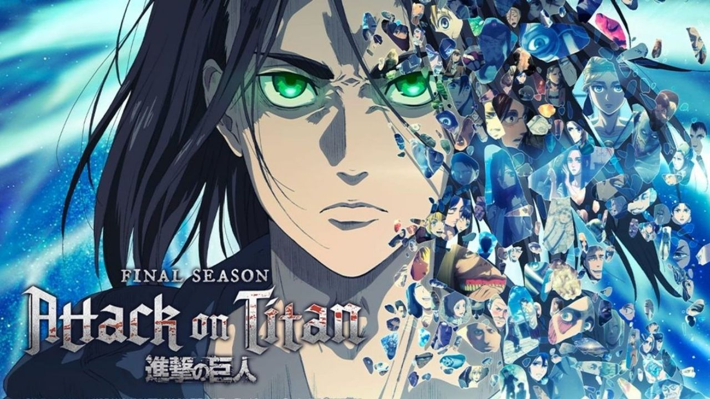
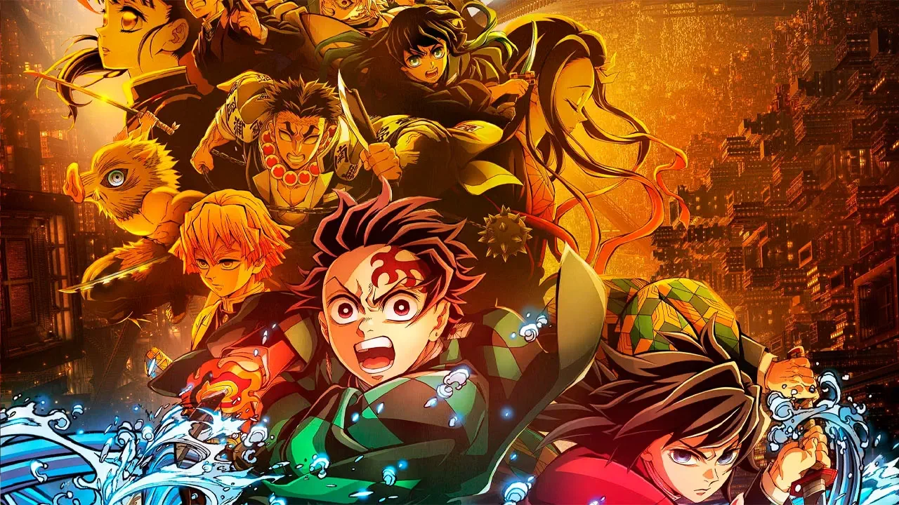

conta a história da humanidade encurralada em cidades protegidas por gigantescas muralhas para se defender dos Titãs, criaturas humanoides que devoram pessoas
Saiba mais
É uma história que se passa no Japão da Era Taisho e acompanha o jovem Tanjiro Kamado, que se torna um caçador de demônios após ter sua família massacrada e sua irmã Nezuko transformada em um oni.
Saiba maisNaruto é uma famosa série de mangá e anime criada por Masashi Kishimoto que conta a história de Naruto Uzumaki, um jovem ninja da Aldeia da Folha.
Saiba mais